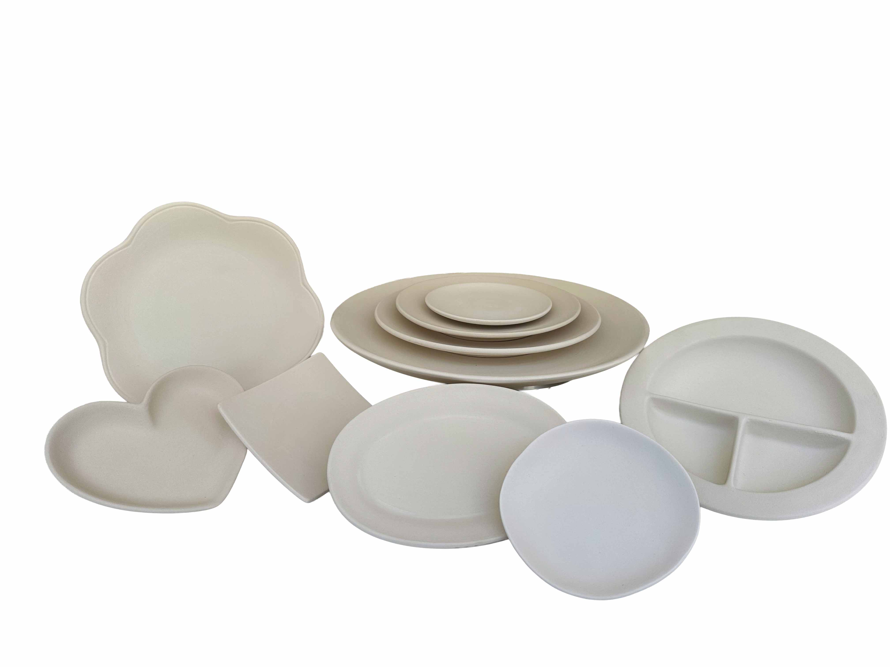
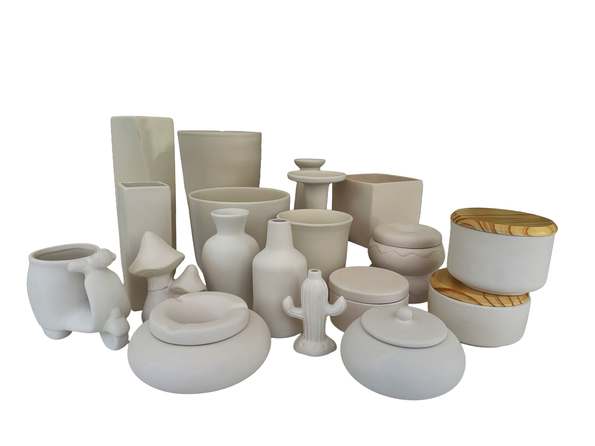

De canecas a tigelas, pratos a peças decorativas, explore uma seleção da nossa cerâmica pronta para pintar. Visite o estúdio para ver toda a nossa gama!







Consulta as nossas FAQ para detalhes sobre o nosso estúdio, o processo de pintura e tire suas dúvidas.
Visitar FAQ